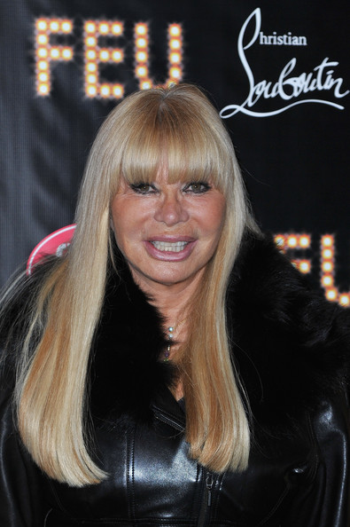

Sofalovakedestalas.lt - Skandinaviški baldai, sofos, lovos, kėdės, stalai internetu
 Prisijungti Susisiekite su mumis Susisiekite dabar: +370 676 70609 Kontaktai Krepšelis 0 0Prekių nėra
Prekių atsiėmimas sandėlyje Pristatymas 0,00 € VisoPirkti
Prekė sėkmingai pridėta į krepšelį
Kiekis VisoKrepšelyje yra 0 prekė (-ės). Krepšelyje yra 1 prekė.
Prekės viso (su PVM) Viso pristatymas (su PVM) Prekių atsiėmimas sandėlyje Viso (su PVM) Tęsti apsipirkimą Pereiti prie užsakymo Meniu Meniu Sofos SOFOS SOFOS-LOVOS KAMPINĖS SOFOS FOTELIAI PUFAI-BANKETĖS Lovos LOVOS SU PATALYNĖS DĖŽE IR GROTELĖMIS LOVOS SU PATALYNĖS DĖŽE IR RĖMINIU ČIUŽINIU LOVOS BE PATALYNĖS DĖŽĖS ĄŽUOLINĖS LOVOS Kėdės KĖDĖS BARO IR PUSBARIO KĖDĖS Stalai ĄŽUOLINIAI STALAI PRASIILGINANTYS STALAI INDUSTRINIO STILIAUS STALAI ŽURNALINIAI STALIUKAI DARBO STALAI, KONSOLĖS IR LENTYNOS Korpusiniai baldai TV STALIUKAI KOMODOS INDAUJOS SPINTELĖS, ŠONINIAI STALIUKAI KONSOLĖS Kolekcijos MODENA OSLO NEW OSLO PREMIUM PRAGUE RIVIERA LOFT LUCA VERONA HOWARD SCANDIC NORDIC LAHTI POLA HANSA HUGO BERGAMO RETRO KEMI TURKU WEST PADOVA Užsakoma tik internetu Išpardavimas Sofos Lovos Kėdės Stalai Korpusiniai baldai Kolekcijos Naujos prekės Greita peržiūra 185,00 € Turime sandėlyje NaujaĄžuolinė spintelė HUGO EASY 60cm
Turime sandėlyjeMatmenys cm (ilgis/plotis/aukštis) 60x38x52 arba 62 2 aukščiai pasirinkimui Medžiagos: ąžuolo masyvas, metalas Apdaila: aliejuotas arba be apdailos Baldas surinktas: dalinai surinktas Kilmės šalis: Ukraina Papildoma informacija: Modernaus dizaino, industrinio stiliaus staliukas Hugo, pagamintas iš ąžuolo masyvo, metalinėmis kojomis....
185,00 € Į krepšelį Daugiau Turime sandėlyje Greita peržiūra 352,00 € 440,00 € -20% Turime sandėlyje NaujaMODERNA ELIPSE WHITE 140X90 industrinio...
Turime sandėlyjeMatmenys (ilgis/plotis/aukštis) 140/90/75 cm Prailginimas: nėra Medžiagos: Šakoto ąžuolo masyvas, metalas Apdaila: stalviršis aliejuotas arba be apdailos, metalas dažytas pilkai, baltai, juodai arba lakuotas Baldas surinktas: dalinai surinktas Kilmės šalis: Ukraina Papildoma informacija: Modernaus dizaino stalas, pagamintas iš...
352,00 € 440,00 € -20% Į krepšelį Daugiau Sumažinta kaina! Turime sandėlyje Greita peržiūra 550,00 € Turime sandėlyje NaujaBERGAMO WHITE 200X100 industrinio stiliaus...
Turime sandėlyjeMatmenys (ilgis/plotis/aukštis) 200/100/75 cm Prailginimas: nėra Medžiagos: ąžuolo masyvas, metalas Apdaila: stalviršis be apdailos arba aliejuotas, metalas dažytas pilkai, baltai, juodai Baldas surinktas: dalinai surinktas Kilmės šalis: Ukraina Papildoma informacija: Modernaus dizaino, industrinio stiliaus stalas, pagamintas...
550,00 € Į krepšelį Daugiau Turime sandėlyje Greita peržiūra 530,00 € Turime sandėlyje NaujaBERGAMO WHITE 180X100 industrinio stiliaus...
Turime sandėlyjeMatmenys (ilgis/plotis/aukštis) 180/100/75 cm Prailginimas: nėra Medžiagos: ąžuolo masyvas, metalas Apdaila: stalviršis be apdailos arba aliejuotas, metalas dažytas pilkai, baltai, juodai arba lakuotas Baldas surinktas: dalinai surinktas Kilmės šalis: Ukraina Papildoma informacija: Modernaus dizaino, industrinio stiliaus...
530,00 € Į krepšelį Daugiau Turime sandėlyje Greita peržiūra 480,00 € Turime sandėlyje NaujaBERGAMO WHITE 160X100 industrinio stiliaus...
Turime sandėlyjeMatmenys (ilgis/plotis/aukštis) 160/100/75 cm Prailginimas: nėra Medžiagos: ąžuolo masyvas, metalas Apdaila: stalviršis be apdailos arba aliejuotas, metalas dažytas pilkai, baltai, juodai arba lakuotas Baldas surinktas: dalinai surinktas Kilmės šalis: Ukraina Papildoma informacija: Modernaus dizaino, industrinio stiliaus...
480,00 € Į krepšelį Daugiau Turime sandėlyje Greita peržiūra 265,00 € Turime sandėlyje NaujaBERGAMO WHITE S 110X60 ąžuolinis stalas
Turime sandėlyjeMatmenys: (ilgis/plotis/aukštis) 110/60/74cm Medžiagos: ąžuolo masyvas, metalas Apdaila: stalviršis be apdailos arba aliejuotas, metalas dažytas pilkai, baltai, juodai arba lakuotas. Kojų aukštį galim pagaminti kitą Baldas surinktas: dalinai surinktas Kilmės šalis: Ukraina Papildoma informacija: Modernaus dizaino, industrinio...
265,00 € Į krepšelį Daugiau Turime sandėlyje Greita peržiūra 490,00 € Priimame užsakymus NaujaLova VELVET 200
Matmenys: (ilgis/plotis/aukštis) 214/212/26 Patalynės dėžė: nėra Čiužinys: nėra, yra grotelės čiužiniui 200/200 Galvūgalis: (aukštis/gylis/plotis) 89/10/192 nugarėlė traukta pagrindine tekstile Spalvų pasirinkimas: Yra Kojelės: 16 cm medinės, ąžuolinės alyvuotos arba juodai, baltai dažytas bukmedis ir metalinės. Kaina gali būti ir...
490,00 € Į krepšelį Daugiau Priimame užsakymus Greita peržiūra 455,00 € Priimame užsakymus NaujaLova VELVET 180
Matmenys: (ilgis/plotis/aukštis) 214/192/26 Patalynės dėžė: nėra Čiužinys: nėra, yra grotelės čiužiniui 200/180 Galvūgalis: (aukštis/gylis/plotis) 89/10/192 nugarėlė traukta pagrindine tekstile Spalvų pasirinkimas: Yra Kojelės: 16 cm medinės, ąžuolinės alyvuotos arba juodai, baltai dažytas bukmedis ir metalinės. Kaina gali būti ir...
455,00 € Į krepšelį Daugiau Priimame užsakymusSkandinaviški baldai Jums
Prekiaujame Skandinavijos rinkai skirtais, modernaus dizaino, skandinaviško stiliaus ir aukštos kokybės baldais.
Įsigykite dabar!
Jūsų patogumui sandėlyje turime pagamintus populiariausius baldus, todėl juos galima apžiūrėti ir įsigyti iškarto, Jums patogiu laiku.
Patogus pirkimas
Jums pateikiame patogią svetainę pirkti baldus internetu.
Skambinkite arba rašykite mums – visada Jums padėsime.
Turite klausimų susisiekite dabar - visada Jums padėsime
+370 676 70609
Facebook: SofaLovaKedeStalas.lt
El. paštas: sale.brandas@gmail.com